Lo que harás

¡Crea una animación corta 🎥 con una sorpresa 🎉!
Vas a:
- Crear tu propia animación
- Probar y depurar tu código
- Crear tu animación de parte en parte
ReproducirHaz clic en la bandera verde para ver la animación. La animación tiene cuatro partes:
|
Obtén ideas
Piensa en cuál podría ser tu historia y explora estos proyectos de ejemplo para obtener más ideas:
Crea tu escena
¿Tienes alguna idea sobre tu animación?
Agrega un fondo 🖼️, un personaje principal 🐙👩🦼🦖 y un objeto interesante 🎂🎾🎁 de tu elección para crear la primera parte de tu animación.
| Crea un proyecto nuevo en Scratch. Puedes usar directamente este enlace y Scratch se abrirá en otra pestaña del navegador. |
Recuerda iniciar sesión en Scratch si no lo has hecho ya y cambiar el nombre de tu proyecto para llamarlo Animación sorpresa.
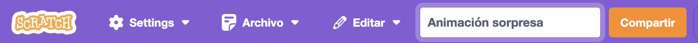
Diseña tu escena
Elige un tema para tu animación. Podrías elegir:
🐯 Animales Terrestres
🐠 Animales marinos
👽 Extraterrestres
🌿 Naturaleza
🌈 Clima
🌮 Comida
🚀 Viajes
⚾ Deporte …. U ¡otra cosa!
Elige:
Elige un objeto para que sea el 🐙👩🦼🦖 el personaje principal
Elige otro objeto para que sea el 🎂🎾🎁 un objeto interesante
 Elige un 🖼️ fondo para ambientar la escena.
Elige un 🖼️ fondo para ambientar la escena.
Organiza tus objetos
¿Dónde quieres que empiecen tus objetos? ¿Cómo de grandes quieres que sean? ¿Qué aspecto quieres que tengan?
Agrega un bloque al hacer clic en la bandera verde, dentro de cada uno de tus objetos. Luego, debajo, agrega bloques para configurar tus objetos al comienzo de tu animación.
Consejo: Recuerda configurar tanto tu 🐙👩🦼🦖 personaje principal como tu 🎂🎾🎁 objeto interesante.
Te recuerdo qué aspectos de tus objetos puedes configurar, para que no te olvides de nada:
Posiciona tus objetos
Siempre tendrás que posicionar tus objetos al iniciar tu animación, porque se moverán por la pantalla durante el desarrollo de la acción. Mueve al 🐙👩🦼🦖 personaje principal a la posición que elijas en el escenario, luego agrega un bloque ir a x: y: a tu código (recuerda que Scratch rellenará por ti los valores de X e Y que tenga el objeto al momento de añadir el bloque)
Repite esta tarea para el 🎂🎾🎁 objeto interesante.
Cambia el tamaño de tus objetos
Es posible que tus objetos modifiquen su tamaño durante la aplicación o, simplemente, que prefieras usarlos más pequeños o más grandes de lo que son por defectos. Sea como sea, es buena idea ajustar el tamaño de cada objeto al iniciarse el proyecto.
Para cambiar el tamaño de un objeto para todo el proyecto, cambia el número en la propiedad Tamaño en el Panel:
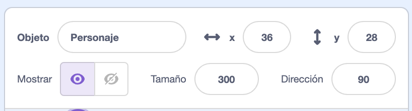
Para cambiar el tamaño de un objeto solo para una parte del proyecto, agrega código fijar tamaño a el tamaño de tu elección. Esta es una buena opción si quieres que tu objeto cambie de tamaño en el proyecto.
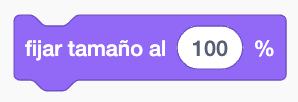
Configura los disfraces de tus objetos
Para cambiar el disfraz de un objeto para todo el proyecto, haz clic en la pestaña Disfraces y selecciona uno de los disponibles.
Para cambiar el disfraz de un objeto para una parte del proyecto, agrega un bloque cambiar disfraz a a tu código y selecciona en el desplegable para que se muestre el disfraz de tu elección.
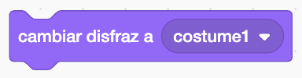
Oculta o muestra tus objetos
Es buena idea agregar al inicio un bloque mostrar en los objetos que deban aparecer visibles al inicio de tu proyecto, por si luego los ocultas durante la animación.
De igual forma, es importante acordarte de usar un bloque esconder en los objetos que deban estar ocultos al empezar el show.
Configura la dirección de tus objetos
Es posible que tus objetos giren durante la animación y acaben mirando hacia donde no deben. O puede que quieras usar un objeto en una dirección diferente a la que trae por defecto.
Para cambiarle la dirección para todo el proyecto, cambia la Dirección y el Estilo de rotación en el Panel de objetos:
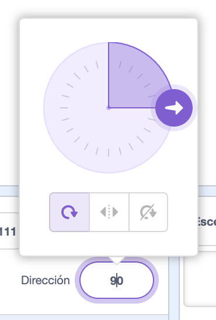
Para cambiar la dirección y estilo de rotación de un objeto para una parte del proyecto, agrega bloques a tu código para cambiar el estilo de rotación y la dirección:
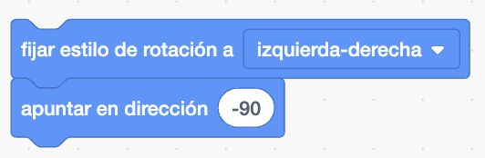
Muestra curiosidad
¿El objeto hará algo para llamar la atención? ¿Cómo reaccionará el personaje? ¡Tú decides! Crea la segunda parte de tu animación, en la que tu personaje debe ver el objeto y mostrar curiosidad hacia él.
| Descomposición es dividir un proyecto en partes más pequeñas y más fáciles de entender. Esto significa que puedes construir un proyecto una parte cada vez hasta que lo hayas completado. En este paso, te concentrarás solo en la curiosidad de tu animación. |
El objeto interesante
Elige: decide qué quieres que haga tu objeto interesante.
Agrega bloques en el 🎂🎾🎁 objeto interesante, colgándolos del evento necesario para que se ejecuten cuando tú quieras (al hacer clic en la bandera verde, al hacer clic en el objeto, al pulsar alguna tecla, etc.) Puedes hacer que tu animación sea interactiva y que los objetos cambien cuando el usuario los pulse o pulse cierta tecla, o mueva el ratón, etc.
Como ideas, puedes probar:
Sacudir un objeto
Puedes girar sobre sí mismo un objeto para simular que tiembla o se sacude. Un ejemplo de código podría ser este:
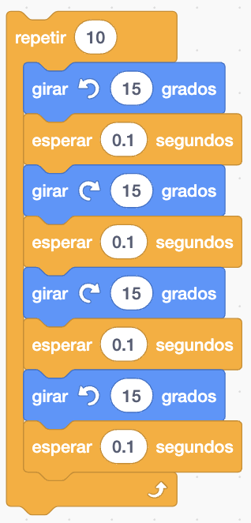
Puedes adaptar ese código modificando el número de repeticiones (o repitiendo para siempre), modificando los sentidos de giro, los ángulos, los tiempos de espera, etc) ¡Experimenta para descubrir efectos interesantes!Agregar efectos gráficos
Recuerda lo que aprendiste en el proyecto anterior para agregar efectos a personajes. Puedes utilizar todo lo que quieras para darle vida a tu animación.
Haz clic en tu objeto Personaje en la Lista de objetos, luego haz clic en la pestaña Código.
Agrega el mismo script que usaste para cambiar el color de los ojos. Ahora no vas a cambiar el color sino que vas a usar otros efectos. Si despliegas en el bloque sumar al efecto color, puedes ver diferentes efectos que se pueden aplicar a los objetos:

Estos efectos se pueden cambiar de dos formas:
- Dándoles un valor numérico concreto con el bloque

- Sumándole un valor a lo que ya valiera antes con el bloque

¿Qué efectos gráficos deseas cambiar para tu personaje?
Elige un efecto en el menú desplegable dentro del bloque sumar al efecto color que añadiste. Experimenta con los números hasta que tengas un cambio que te guste. Recuerda probar constantemente tu código haciendo clic en el objeto para ver cómo va cambiando su apariencia.
Te dejo una pequeña guía de los efectos disponibles si necesitas algo de ayuda con esta tarea:
- color: puede tener como valor cualquier número de 0 a 199 (los números más grandes vuelven a comenzar, por lo que 200 es lo mismo que 0)
- ojo de pez: 0 significa que no hay efecto, los números más grandes causan un efecto ‘ojo de pez’ mayor y los números negativos causan un efecto ‘ojo de pez’ inverso.
- remolino: 0 significa que no hay efecto, los números grandes hacen un gran giro hacia la izquierda y los números grandes negativos hacen un gran giro hacia la derecha.
- pixelar: 0 significa que no hay efecto, y los números más grandes crean más píxeles.
- mosaico: 0 significa que no hay efecto, y los números más grandes o negativos afectan el número de copias
- brillo: 0 significa que no hay efecto, los números hasta 100 hacen que el objeto sea más claro y los números negativos hasta -100 hacen que el objeto sea más oscuro
- desvanecer: 0 significa que no hay efecto, y los números hasta 100 hacen que el objeto sea más transparente (con 100 no se vería ya el objeto)
Intenta fijar los diferentes valores de efecto para ver qué hace cada uno. Explora cómo se ve tu personaje con los diferentes efectos y elige algo que quede bien.
No te preocupes si tu personaje se deforma demasiado porque volverá a la normalidad cuando hagas clic en la bandera verde ⚑. Si quieres que vuelva a la normalidad sin tener que pulsar la bandera, también puedes hacerlo utilizando este bloque:
 Consejo: También puedes fijar y sumar efectos gráficos para el Escenario. Puedes probar a poner un evento de al hacer clic en el escenario (asegúrate de seleccionar el escenario para poner código en él) y aplicar algunos efectos, a ver qué consigues.
Consejo: También puedes fijar y sumar efectos gráficos para el Escenario. Puedes probar a poner un evento de al hacer clic en el escenario (asegúrate de seleccionar el escenario para poner código en él) y aplicar algunos efectos, a ver qué consigues.
El personaje
Haz que el 🐙👩🦼🦖 personaje principal muestre interés en el objeto. Agrega bloques al final del script de configuración del 🐙👩🦼🦖 personaje principal.
Si necesitas que el 🐙👩🦼🦖 personaje principal espere hasta que el 🎂🎾🎁 objeto interesante haya hecho algo, agrega un bloque esperar indicando el tiempo que necesites.
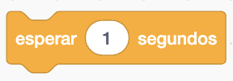
Para que tu personaje hable puedes usar bloques decir o pensar, o incluso usar la extensión Texto a Voz ¡para hacerlo hablar!
Haz que un objeto HABLE con la extensión Texto a Voz
ATENCIÓN: para probar esta extensión y poder escuchar cómo hablan tus objetos, necesitarás traer auriculares de cable a clase para conectarlos al ordenador.
Haz clic en el botón Agregar Extensión (está debajo de la lista de categorías de bloques):
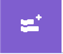
Elige la extensión Texto a Voz:
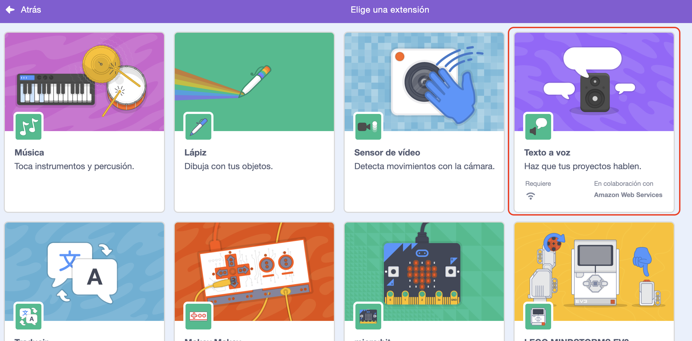
Obtendrás un nuevo menú de bloques Texto a Voz:
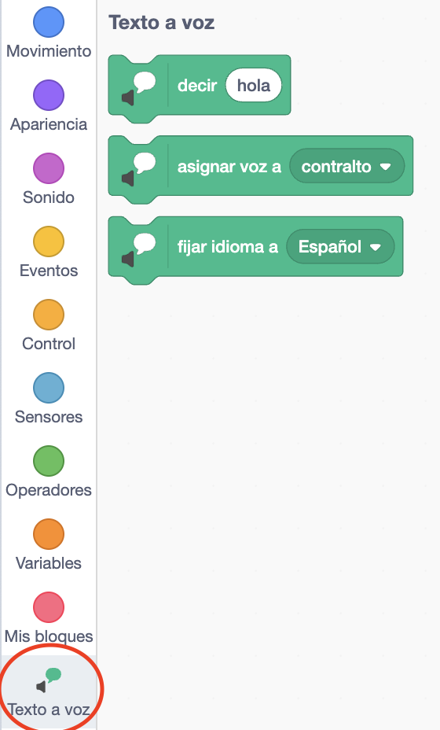
Puedes usar los bloques en el menú Texto a Voz para hacer que tus objetos hablen en voz alta.
Puedes hacer que un objeto hable en voz alta cuando se haga clic en él con este código:
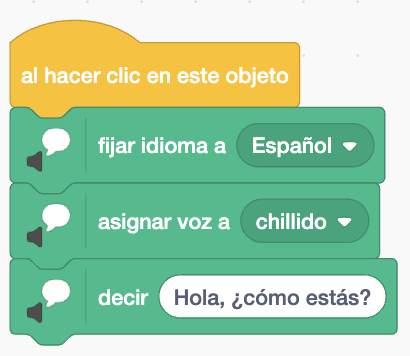
El bloque asignar voz a te permite cambiar la voz de tu personaje entre las siguientes disponibles: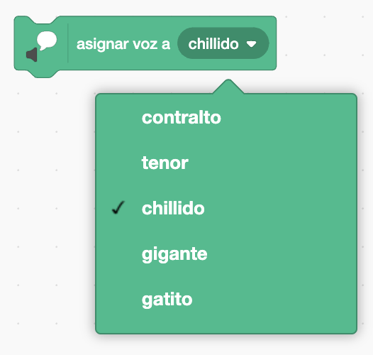
¡Experimenta hasta encontrar la voz que más le pegue a tu personaje!
IMPORTANTE: ten en cuenta que, a lo mejor, las personas que vean tu proyecto no tienen altavoces ni auriculares para escuchar el sonido. No deberías abusar de esta característica o, al menos, deberías añadir también los bloques normales de decir y pensar para que se puedan leer los diálogos además de escucharlos.
Muestra el estado de ánimo de un objeto con disfraces
El personaje podría emocionarse, como hiciste en el proyecto Conversación espacial.
Mira en este ejemplo lo que hace Abby al darle a la bandera verde:
Como ves, es posible simular emociones, como en este caso la duda, mediante el cambio de disfraces y los bloques de comunicación (decir o pensar). En este ejemplo anterior, el código es el siguiente:
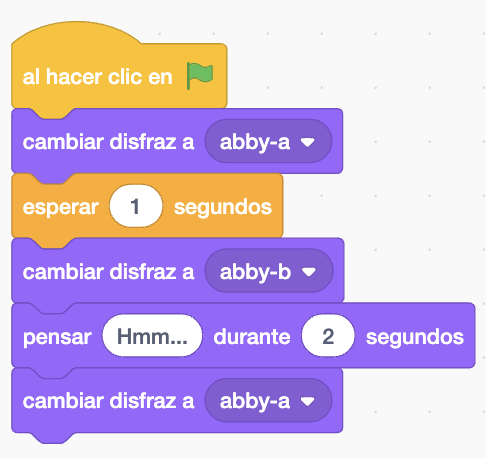
Consejo: asegúrate de usar un bloque que tenga un valor de tiempo (los bloques decir " " durante o pensar " " durante), no un bloque decir o pensar simples, de lo contrario, no verás el cambio de disfraz.Anima el movimiento de los objetos con disfraces
El personaje podría ser valiente y acercarse a ver el objeto. Fíjate en este proyecto de ejemplo:
Al darle a la bandera, el erizo se desplaza a la derecha y parece que camina, pues sus patas "se mueven" gracias a que vamos cambiando el disfraz periódicamente. El código utilizado en el ejemplo es el siguiente:
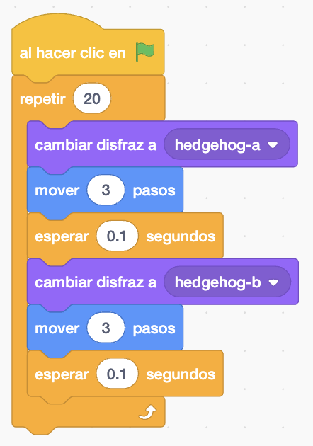
Consejo: si quieres usar todos los disfraces que tiene un objeto, puedes usar el bloque siguiente disfraz en el bucle, en vez de cambiar disfraz a.
Consejo: aumenta el número de pasos en cada mover para que el objeto vaya más rápido. Cambia el número en el bloque repetir para ajustar la distancia. Cambia el número en el bloque esperar para modificar la velocidad de la animación.
Consejo: para que el objeto se mueva hacia atrás, puedes usar números negativos, por ejemplo mover -3 pasos. O bien, puedes utilizar un bloque apuntar en dirección -90 para cambiar la dirección del objeto antes de que se mueva (-90 apunta hacia la izquierda).
Consejo: si tu objeto no incluye directamente disfraces para animar el movimiento de caminar, puedes probar a duplicar su disfraz y modificarlo moviéndole ligeramente las piernas, para tener dos o tres versiones del personaje caminando que luego puedes ir mostrando alternativamente en el bucle.
Prueba y depura
Prueba: haz clic en la bandera verde para probar tu proyecto. El 🐙👩🦼🦖 personaje principal debe mostrar curiosidad por el objeto.
Vuelve a hacer clic en la bandera verde. Si cambiaste la posición o el aspecto del 🎂🎾🎁 objeto interesante o del 🐙👩🦼🦖 personaje principal, tendrás que asegurarte de que vuelva a su posición o aspecto inicial cuando ejecutes el proyecto de nuevo.
Posibles fallos y soluciones:
Recuerda que debes preocuparte de que tu objeto comience la animación en su posición, con su tamaño y aspectos iniciales y visible si lo habías escondido. Un ejemplo de código de inicio podría ser de este estilo (obviamente, tú tendras que cambiar otras cosas de tus objetos):
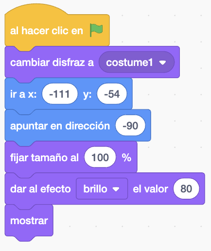
Consejo: todos los efectos gráficos se borran cuando haces clic en la bandera verde, por lo que no necesitas borrarlos, pero es posible que debas configurar los efectos que deseas que el objeto tenga.El sonido no funciona
Si tu ordenador tiene altavoces, verifica que el volumen sea lo suficientemente alto. Si no tiene altavoces, es imposible que oigas el sonido si no usas unos auriculares de cable conectados al PC.
¡Añade una sorpresa!
¿Alguna vez has escrito una historia con un giro de la trama o una sorpresa? ¿Has visto un programa o leído un libro con un final impredecible? Puede utilizar los mismos métodos al crear una historia o animación digital.
Ahora necesitas agregar una sorpresa. ¿Qué podría pasarle al objeto?
- ¿Se convertirá en otro objeto?
- ¿Se convertirá en un personaje?
- ¿Desaparecerá y revelará otro objeto?
¡Tú decides! Crea la tercera parte de tu animación, añadiendo alguna sorpresa para el espectador.
¿Cuándo ocurrirá la sorpresa?
Selecciona el 🎂🎾🎁 objeto interesante. Agrega código para que la sorpresa comience cuando lo desees. ¡Deja un tiempo para darle emoción!
Deberás elegir un tiempo de espera que funcione para tu proyecto. Si tienes un personaje que pasa mucho tiempo siendo curioso, deberás elegir un mayor tiempo de espera. Usa el bloque esperar con el tiempo que necesites.
¡Ahora, crea la sorpresa!
- El objeto podría reproducir un sonido, cambiar de disfraz, cambiar de efectos gráficos o cambiar de tamaño.
- Podrías agregar un disfraz increíble al objeto, y luego usar el bloque cambiar disfraz a para revelarlo.
- Puedes hacer que el objeto parezca convertirse en otro objeto diferente que previamente habrás añadido a tu proyecto. Para hacer esto, debes esconder el objeto inicial, al mismo tiempo que usas mostrar en el otro objeto para enseñarlo.
Prueba y depura
Comprueba que tu proyecto funciona y que el personaje, tras mostrar curiosidad, se lleva una sorpresa.
Algunos errores que podrías encontrar son:
El personaje se mete detrás del objeto y debería estar delante (o al revés)
Si te ocurre que los objetos no se solapan como tú quieres, tienes que cambiarlos de capa. Lo puedes hacer directamente desde la pantalla de diseño haciendo clic en el objeto que quieres que quede por delante de los demás:
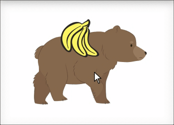
También puedes usar los bloques ir a capa delantera o ir a capa trasera para posicionar un objeto.
Si quieres que un objeto se quede siempre en la capa de adelante o de atrás, usa un bucle por siempre para hacer que el objeto regrese a la capa correcta si lo mueves accidentalmente:
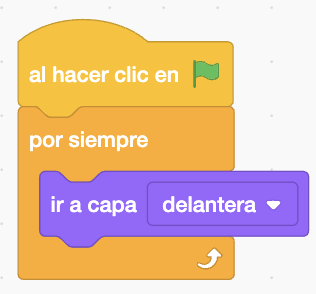
La sorpresa no ocurre cuando debe
Si la sorpresa ocurre en el momento equivocado, puedes solucionarlo.
Es posible que debas cambiar la cantidad de tiempo en algunos o en todo los bloques esperar, o agregar más bloques esperar, para obtener el tiempo correcto.
TAREA FINAL. Mejora tu proyecto
Puedes mejorar tu proyecto agregando una reacción. ¿Cómo reaccionará tu personaje principal? ¡Tú decides!
Puedes usar cualquiera de estas técnicas que ya conoces o, mejor aún, combinar varias de ellas:
- Mostrar el estado de ánimo de un objeto con disfraces
- Usar efectos gráficos
- Hacer que el objeto hable con la extensión Texto a Voz
- Animar el movimiento del objeto con disfraces
- Agregar sonidos a un objeto o al escenario
- Crear o editar disfraces o fondos para personalizar todo y que se vea como tú quieras
- Añadir accesorios a tus objetos o partes del cuerpo que se muevan, como en el proyecto anterior.
¡Inspírate!
Los programadores profesionales exploran y se inspiran en el código creado por otros programadores.
En este enlace puedes ver los remixes del proyecto de Animación Sorpresa para ver lo que otros creadores han construido. Recuerda pulsar en "Ver dentro" si quieres ver cómo está hecho alguno que te guste especialmente.
En este otro enlace tienes un estudio con varios proyectos de este tipo que también puedes usar como inspiración. Eso sí, recuerda que se está valorando también la originalidad y la creatividad de tu proyecto, así que ¡no copies demasiado!
Cuando hayas terminado tu proyecto, no te olvides de compartirlo y añadir el enlace a la tarea de Google Classroom como siempre.